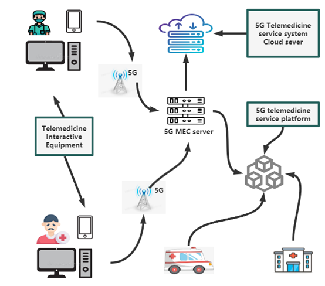

5G TELEMEDICINE SERVICES
With the gradual improvement of 5G networks and the deepening of 5G application innovation practices, 5G will bring more extensive applications in people's lives, production and social governance in the future. The application of 5G communication technology
will also accelerate the development of medical services, especially the implementation of clinical applications such as 5G Telemedicine, 5G remote monitoring, 5G intelligent robots, 5G Internet of Things, and 5G data analysis, which will
further enhance the intelligence level of medical institutions. , to achieve the sharing of high-quality medical resources. 5G Telemedicine service system It is necessary to optimize and upgrade the traditional medical information management
model, break down industry barriers, and focus on patients to achieve the integration and symbiosis of hospitals, hospitals at all levels, and both inside and outside the hospital.
Introduction
COVID-19 has been bothering us since December 2019. For better epidemic prevention, 5G Telemedicine service system is a good solution. 5G communication technology can not only achieve high-quality transmission of 3D images, but also provide data collection
in addition to communication information , real-time positioning, remote diagnosis and treatment and other integrated functions. In the medical industry, communication is one of the important factors affecting the development of medical rescue.
5G high-speed communication can effectively improve the efficiency of medical emergency rescue and improve the ability to respond to public health events.
Flow chart

The proposed system performs data preprocessing and data analysis at the Multi-access Edge Computing layer, and then transmits the analysis results and user health information to the cloud layer for storage and management. Therefore, compared to using
cloud computing only, edge computing platforms undertake sensor data analysis tasks at the edge of the network. This reduces the distance of data transmission, so making the system run faster. The system can reduce or avoid transmission delays
to the cloud and the nodes of data analysis are closer to the nodes of data generation.
Easy 5 steps
step 1
Fill in and submit the registration form
step 2
Our staff will call you for identity verification/confirmation before speaking with the doctor. Please wait by the phone. After confirmation, the staff will guide you to connect to the online video conference. Please have your equipment ready.
Once connected, a nurse will give you a quick consultation before connecting you to a doctor.
step 3
Counseling with your doctor via video call
step 4
Credit card online payment
step 5
After payment determine your pick-up method, self pick ※ up or delivery.